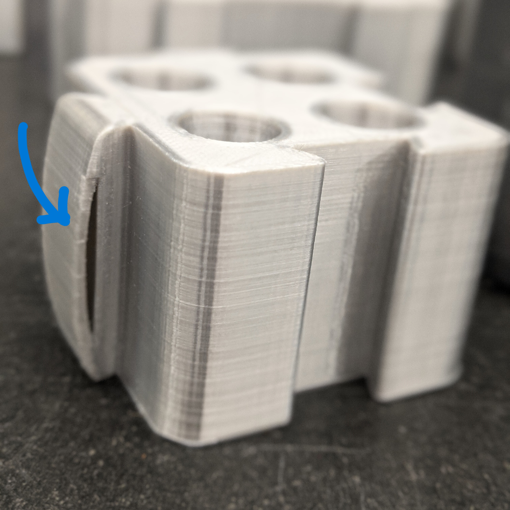
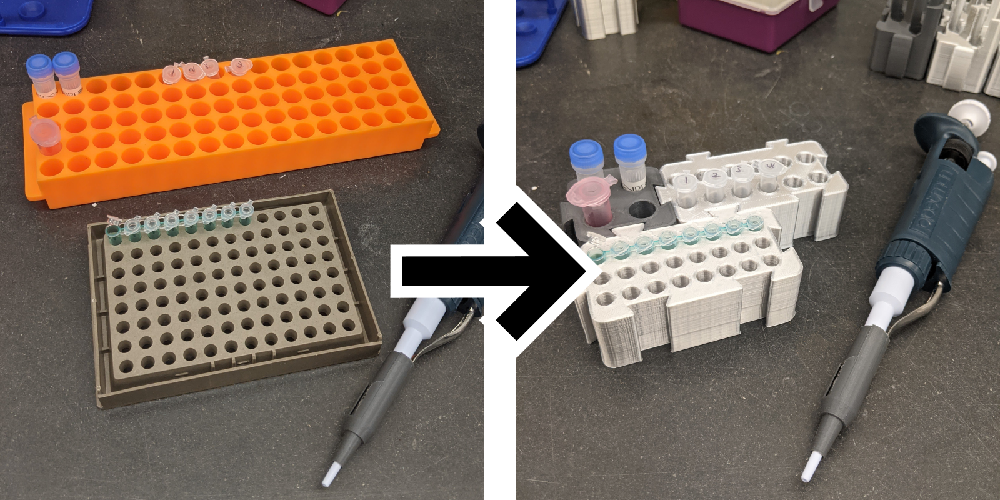
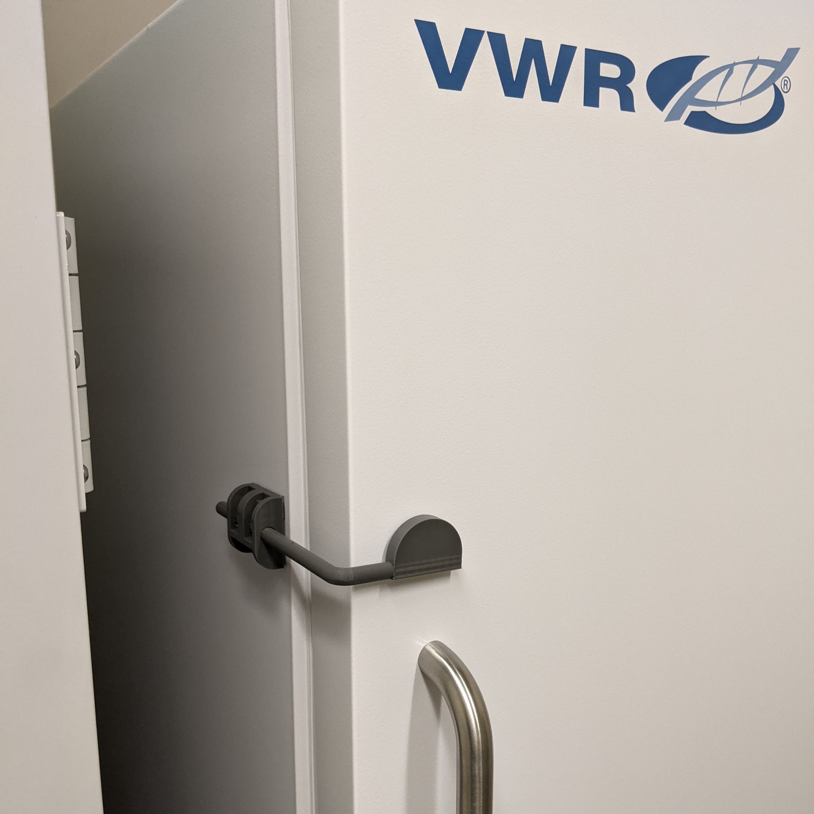
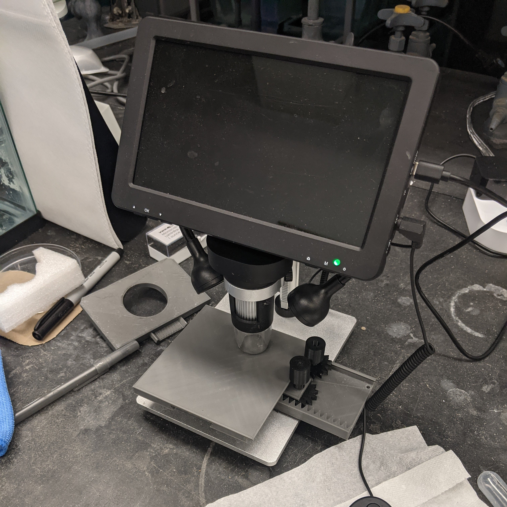
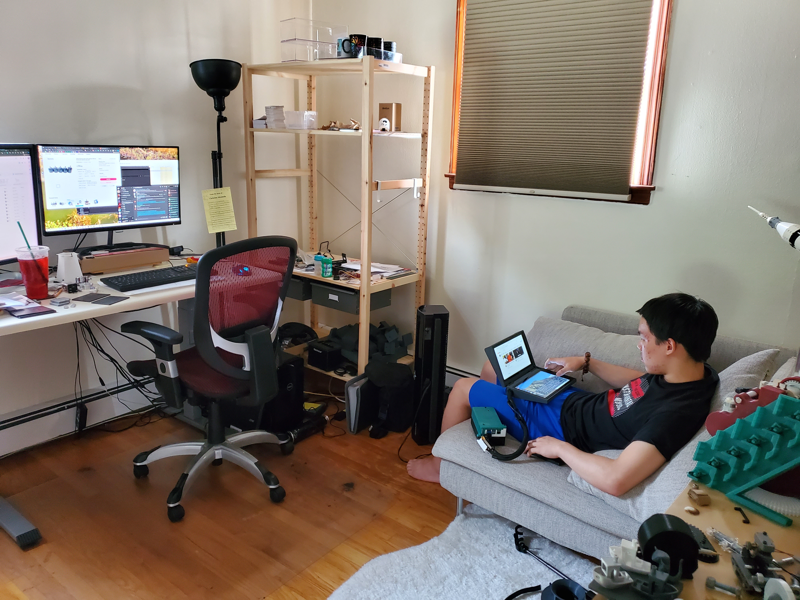
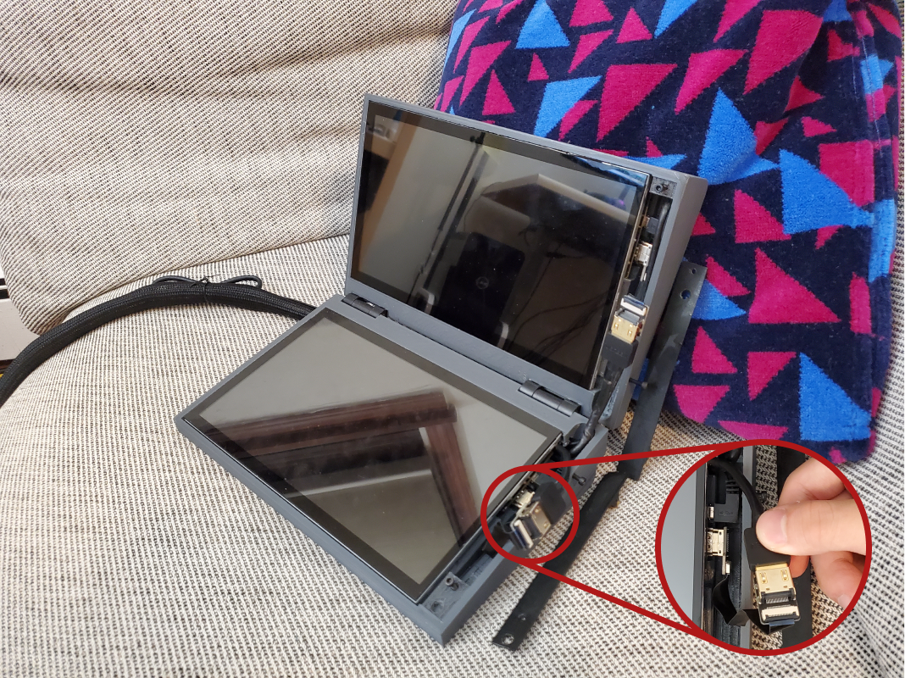
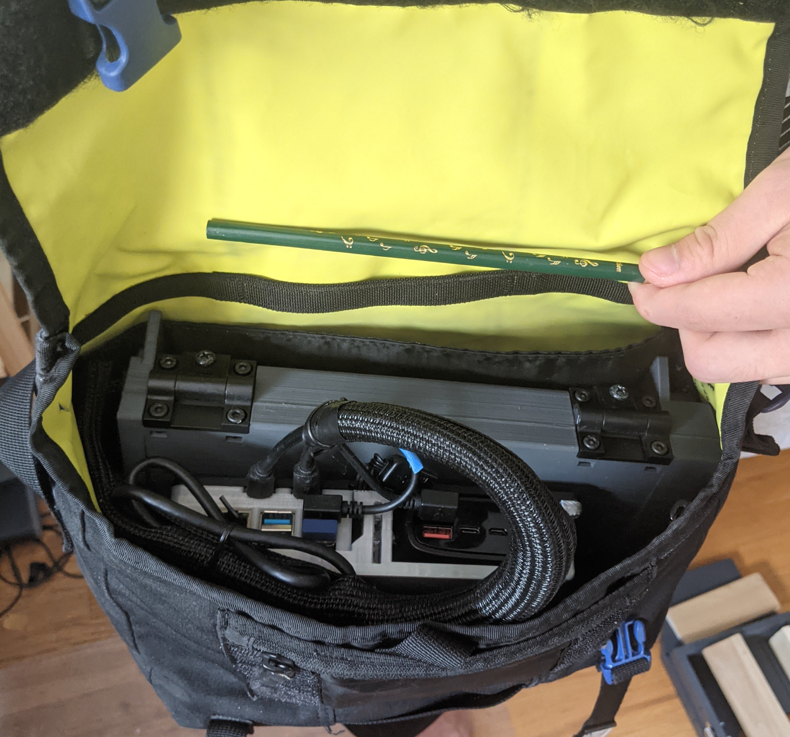

Engineering
CompSci
Art
Activities
Engineering
CompSci
Art
Activities
I began this journey in 8th grade with my first 3D printer, and learned steadily through various projects, which broadly fell in three categories: 1) printable tools for lab research, 2) designs for school activities, and 3) various creations for use at home.
Currently, I am part of the Ward Melville robotics team, and served as the head of CAD. The software I am familiar with and use regularly are, Autodesk Inventor, Fusion, Onshape, and Ultimaker Cura. The materials I have been experimenting with range from plastics, to wood, to metals, and carbon fiber.

3D printable alternatives to often overpriced lab equipment. In the spirit of the Open Design Movement, the aim to make research accessible for the general public and customizable for specialists. I reach these two targets via Twitter and my dad’s lab page under the alias “Bod Owens”.

A modularized tube rack set based on my novel joint design called Spring Dove tail. Designed to be freely assembled by needs and disassemble with ease.

One of my proundest designs so far. I designed a new joinery for modulization of 3D-printed items, by adding my own touch on the historical dovetail joint of woodworking. I coined the term "Spring Dovetail" for it.
An extra curved spring layer is added in the dovetail junction to buffer printing errors and prevent over-tight/loose engagement.

A good application of my Spring Dovetail design is for a system of modularized tube rack sets. Existing commercial products consist of a single molded part with large foorprint. This makes them difficult to use, especially when many tube types are required in the experiments. I thus designed modularized racks which can connect together via Spring Dovetail. The spring tension is fine-tuned to be just right so the block unis could be connected and disconnected without much hassle and still stay together.
This design ended up being one of my most popular, and gained a lot of traction online . The original editable files are also shared with the public under Creative Commons Public License. Not only they are used by many, but also some derived versions are customized by the community, including integrated into a commercial product made by a startup company integrating my design into their commercial bio-reactor products.


A latch lock that can can be used to secure fridges, freezers, and carbinets and prevents them from being not properlly shut or accidentally left open. Designed to have an adjustable arm with two variants to fit any fridge, freezer, or carbinet.
A freezer accidentally left with an unclosed door is the most feared nightmare in the lab. I designed this latch to ensure a door is properly shut and stays shut. Each unit consists of a base which mounts to the side of the target object, an L shaped bar to lock the fridge, and a stopper to adjust the working length of the bar. It only cost 43 cents to make one.
Later, I added a new variant for the opposite purpose, to prevent a door from being accidentaly opened. The new design added a 'push-and-turn" unlocking mechanism. Without unlocking first, the door will stay shut when trying to open the door with an pulling force outward. This is especially useful for protecting lab equipment from accidental collisions.

A modularized feeding appartus that can be used to feed aquatic research animals in lab. Designed to be capable of depositing a consistant amount of food with ease.
Feeding of research animal is a critical variable that needs to be tightly controled in labs. It is frequently a selection between manual feeding (which is affordable but inconsistent) and automatic feeders (which are precise but very expensive). To break this dilemma, I designed manual feeders as a good middle ground solution between full manual feeding and automatic feeders. Make feeding easier, faster, and more consistent.
The whole apparatus is comprised of a funnel which connects to the tank, an adapter, and the single-print feeder. The funnels fit various size of tanks, providing a universal base for the feeder. The feeder stores food in a upper hopper, which feeds into a rotating compartment. When the lever is pushed, this compartment rotates and dispenses the food. The the inlet and outlet of the rotating compartment is offset in such a way that food is only allowed to either flow in or flow out, but never at the same time. This guarantees that the amount of food dispensed per lever push is consistent.
The feeders come in 2 sizes so far, printed in a single print, with good consistency and preision in delivery.
A gliding table that can be used to reposition samples under microscopes. Designed to provides a precise and convinient way to move samples on a microscope stage.
A gliding table to move samples in X-Y axis is fundimental for research-grade microscopes, but rarely seen in consumer grade microscopes such as the ones for elementary school classrooms. To fill this void, I designed a 3D printable microscope gliding table. It enables a $100 camera scope from Amazon to make & stitch high-resolution images at the organismal level.
One great value of the gliding table is to enable microscope imaging a large sample without the trade-off of resolution. By moving the sample horizontally and vertically, individual images can be stiched into a big image with ease. Each image will be in consistent angles and magnification.
The design includes several pieces, including an optional extension table for transmitted light scopes. Through research and testings, I have optimized the design to minimize friction by printing sharp guide rails. This ensures both minimal contact and shaking. A pair of knobs are included to ease the pinion operation.

A disposible kit that can be used to extract and preserve a targeted agarose gel piece. Designed to be extremely low-cost and very compact.
Gel cutting is a common lab practice. It is usually done by reused razor blades which carry risk of both sample contamination and sharp object injury. To address this issue, I designed an one-time-use square tube equipped with a slider to eject the cut agar. Using my experience in making single print parts, I made the slider and tube print in a single piece with some internal stoppers to prevent the slider from falling out.
The final gel extractor is barely 1 gram, and cost cents to produce. Over 1000 units can be printed with a common $20 1 KG spool of PLA.

An attachment that can be used to secure rolls of tape inside a dispenser. Designed to address an infamous issue of a lab tape dispenser.
This is a relative unique experience. This is a extremely straight-forward and by no means a complex design. However, different to most of my other projects, what I have learned from this case was not about engineering per se, but instead the positive impact that engineering can have, and how timely and directly the impact can reach people in modern world.
It was originated from a tweet in 2022 - a scientist complaining his lab tape dispenser, a model unversially used in all labs, and is also notoriously infamous for its bad design. The tape rolls consistently fall out from the dispenser when pulling the tapes straight up, a problem that everyone working in the lab has suffered but no answers for.
Within hours, I designed a printable clip over the frame to hold the spool down. The design is simple, with a special considertion to strength the structure for resistening pulling force.
The design was then quickly released as a response and immediately helped many resolve this longtime pain (all my research designs are released through my father's twitter account to reach a broader researcher network). This whole interacting experience made me realize that even a very small simple design can have a broad and meaningful impact on a lot of people. And it is also a showcase of the power of 3D printing and how it can be helpful to everybody's life and work.

A modularized holder set that can be used broadly for multiple purposes in the lab. Designed to fit into various lab settings with many base variants and to be able to expand its functionality with add-on modules.
Space is one of the most precious properties in the lab. It is thus important to maximize the use of lab space without comprimising convenience and functionality. To fit into different lab settings, I designed the multi-purpose holders with variable bases.
The fixed bases offer convenience to directly mount to common shelves and tables. The adjustable bases allow the same holder to be flexibly applied on different surfaces. The holders can work independently to hold large items such as pipettes, scissors, tools, clothes & bags, as well as arranging wires and cords.
The holders can also couple with adaptors to further expand their fucntions, for instance, an O-ring to hold smaller items such as tweezers, or a common lab 50ml tube for placing pens and scalpels.
I love this project because of its usefulness and direct impact on research. Most of the commercially available counterparts are ridiculously expensive. One good example is the pipette holder, which usually charges >$150 for simply a piece of plastic and are incompataible between brands. All these cause hurdles of research accessibility. With that in mind, I specifically chose to work with the pipette head knob, as it is the component shared by most of the brands. I then designed an additional adaptor to cover the other brands without the head knob.
Important to note, for the same reason, I prioritize designs that can be robustly printed even with consumer-grade printers. For instance, this design is designed to be completely printable without support material, saving material and hassle. Consequently, most of my printed objects look simple instead of fancy. And everyone can print and use them in their research easily.
This is a open-end project and I continue to expand the sets. One of the later addition is the version that can be taped or screwed on flat surface.
A dispenser that can be used to hold and dispense paper tissue tower. Designed to be positioned anywhere in the lab using my multi-purpose holders.
Paper towels are an abolutely required item for lab work. However, people usually have to compromise between accessibility and convenience of using it. Either it is installed on the wall away from the bench, or it is left in a messy fashion on the bench. My design provides a neat solution to cover both bases. Coupling with my Multi-purpose Holders, the dispenser can be positioned almost everywhere in the lab.
It can also be used as a stand-alone. The tissue papers can be accessed from both the top and the bottom.
A device that can be used to store and secure delicate microinjection needles. Designed to be a compact and easy to use system that supports housing needles with various diameters.
Microinjection needles are extremely delicate item for injecting reagents into cells or embryos. The needles are made from capillary tubes and commonly stored in home-made containers with clay which dries out and needs to be replaced with time. I designed a 3D printable needle holding device that is easier to use and lasts forever.
Taking advantge of the flexible nature of printed material, I designed the holding slot to hold various needles while keeping it easy to insert and remove them. Furthermore, the needle-holding assembly can be rotated upright, making it easy to access when in use.
The needle holding kit includes a lid and a bump-lock to secure the needles inside from accidental damages such as falling or shaking. This feature make it suitable for shipping.
During microinjection, frequently the needles are loaded from the back and will require extra time for the loaded reagent to flow down to the needle tip. My designed kit can also function as the stand-by needle holder, allowing preparation of multuple needles to shorten the experiment duration.
An adaptor set that can attach a commercial LED ring lamp directly onto microscope objectives. Designed to provide an affordable epi-illuminiation light source for inverted mircoscopes.
This is one of my many projects to engineer specialized function on consumer-grade microscopes.
In microscopy, epi- and trans-illuminations are used for opaque and transparent specimen respectively (defined by whether the light source and the detector on the same or opposite side of specimen). Microscopes usually only equip with one of the two. It is thus tricky to image both transparent and non-transparent specimen at the same time.
To solve this problem, I designed an adaptor to attach commonly found commercial ring LEDs around the lens, to achieve the goal of having both trans- and epi-illuminiation at the same time.
The adaptor was designed to be flexible and thus was printed with TPU filement, which is a very soft and flexible material. The grip on the lens is tight enough to be used on up-right microscopes where the lens is on top of the specimen.
I also designed a variant which comes with a 3D-printed light diffuser for ring lights with exposed LED bulbs.
A tool that can be used to pry open tube lids. Designed to work on most tubes and save effort and time.
Opening and closing tubes is physically demanding when in high numbers, frequently hurting fingers. I designed this tube opener to help open various types of tubes, making the life easier in the lab. It has two separate ends that work with both flip-top caps and screw caps.
Later, I created a larger variant to open bottles with tightly-sealed caps. I designed this bottle opener with specialized teeth to grip the cap and it can be used to put on or take off the cap with ease.

A set of scoops that can be used to deliver an ultra-fine amount of reagent in lab. Designed to minimize excess build-up and deliver a consisitant amount every scoop.
This is an idea-driven design by request from the people in lab. I then realized the idea and optimized the spoon design.
One key innovation of this spoon is the vertical neck. All commercial spoons have a horizontal neck, which is good for mass production and stacking but a drag for consistency. Taking advantage of the customizable nature of 3D priting, I introduced the vertical neck design which makes the spoons far more consistent than the commercial spoons.
I coined the names Splash, Dribble, and bit for my designed spoons, fitting the nomenclature of common measuring spoons (Tad, Dash, Pinch, Smidgen, and Drop).
The vertical neck design significantly improves the consistency issue in delivering small volumes. Our Splash spoon evidently delivers more than the Drop, but with much lower variation.

A imprinting mold that can be used to imprint embryo-holding agarose plates for microinjection. Designed to operate with a print-in-place handle for convenience.
An injection plate is required to hold embryos in position for microinjection, commly made from molding an agarose plate. One challenge is that the hot agarose causes warping in the molds. I designed a mold which will not deform under the heat. I minimized the surface area contacting the agar and included three handles for convenient lifting. Higher melting temperature materials such as PETG can also be used to prevent warping.
This also include a print-in-place joint for a lift-out handle on the top of the mold to make the opertation easy.

A kit that can be used to stage, document, and measure the size of newly hatched fish. Designed to fit multiple fish with multiple built-in references for scale.
For newly hatched fish, it is difficult to precisely measure their body-length. I designed a simple grooved plate where fish could fit into the grooves and be easily measured in a safe and non-invasive manner via images. Different types of grooves are designed to accomodate fish of various sizes. These features, along with built-in tick marks as the length reference, allow the length of fish in images to be easily converted into real body length. Despite its simplicity, it is one of the most used designs in the lab.

A modularized organizer that can be used to efficiently manage Petri dishes in lab. Designed to be connected with hexagonal bases for minimize footprint.
Petri dishes are probably the most used consumable in labs. They are sold in sleeves without a fitted container or holder. Commercial petri dish organizers are avaialble, but overpriced. I designed a modualrized petri dish organizer set that can be freely assembled and disassembled based on needs and for multiple purposes.
To minimize the footprint, I designed a hexagonal base which can be tiled by dovetail connectors. Vertical poles can be interlocked to stablize the assembly.
The petri dish holder can be easily converted into a petri-dish container by applying the hexagon lid on the top with the labeling area included poles.

A kit that can be used to ship live fish embryos internationally. Designed to house up to 100 embryos and keep them alive for mailing.
Fish embryo shipping is tricky and challenging. I designed this fish embryo shipping plate to make shipping embryos much more securd, reliable, compact, and organized.
The grid layout allows up to 100 embryos to be neatly stored and extracted. Especially useful as it shields each embryo from other accidentally hatched/dead embryos. Using a damp paper towel inside the lid allows it to hold enough moisture for shipping, and it has proven good for overnight domestic shipping. Can be further coupled with heat pads or plastic bags for longer international shipping.


A kit that can be used to handle agarose gels with ease. Designed to secure the gel for operations between electrophoresis and imaging apparatuses
Gel handling is a routine task in the lab. It requires removing the gel from a cast and transferring the gel for following steps such as imaging. I designed this Gel Shovel Kit to make this task easy. It comes with two models to fit gels with different sizes.
An alternative that can replace expensive commercial pipette tip ejectors. Designed to be a printable replica reverse engineering the existing product.
This project is a direct response to overpriced commercial products. Typical pipette tip ejectors are just static pieces of plastic but sold for around $20 from large companies. After studying the original design and its function, I reverse engineered a design that takes just under an hour to print and costs cents in material. We released all our printing files to the public for free.

A modualized label set that can be used to organize shared fridges and freezers. Designed to clearly allocate and mark space inside of fridges and freezers.
To better organize the space in fridges and freezers, I designed a set of hanging labels for various types of shelves, with a smooth surface to write or put actual labels on. They can hang on the wire ledges and the door shelves of a fridge. I also made coupling side arrows to better indicate where a label was referring to.

An adaptor that can be used to help the operation of tweezers. Designed to limit the travel of tweezer arms and ease the pressure on samples.

I designed this adaptor with the goal to shorten the range for tweezer tips to meet. By limiting tweezer tips' range of movement, it allows finer control when using the tweezers, which is especially useful for handling fragile specimens. A screw is integrated for adjusting the extent of limitation.
A scoop that can be used to directly deposit a fixed amount of agarose for gel making. Designed to save time from weighing agarose.
This project was initiated from an interesting observation that people always made agarose gel using the same amount of agarose into the same amount of buffer solution. Even so, people still weigh the gel constitutes everytime. To make this task easier, I designed a small scoop to be kept in the agarose container and give a fixed amount of agarose powder.
It is similar to the idea of having a scoop come with infant formula powders. I made a ready-to-print 0.6 g scoop, easy for preparing commonly used 1.2% & 1.5% gels. I also released the original Inventor file, so people can adjust the scoop volume, going by the formula:
875w = 4/3r^3 + 5r^2 Unit: w(g), r(mm)

Engineering related projects in school, including for Principles of Engineering, Robotics, and designs for school activities.
'22
An experimental swerve drive, designed as an in-house drive system for robotics. A proposal for the First Robotic Competition (FRC) season during 11th grade (16 years old).
The idea was to develop a home-grown swerve drive for the Ward Melville robotics team. Swerve drive is a type of drive system in robotics where each wheel can be individually steered. It grants significant maneuvering advantages and thus is broadly used by most high level teams. This prototype was produced as a proof of feasibility to the rest of the team.
After researching swerve, I chose differential swerve as the target drive system. A differential swerve would have greater power using both motors to steer and drive, and each module has a lower part count meaning it would be easier to manufacture.
As a warm-up project, I started off with a traditional swerve drive, designed with fusion 360.

After the success, I moved on to the final design. Centered around a VEX robotics wheel, two large 3D printed ring gears surrounded it driving a steel axle. A 3D printed case holds the entire system together and acts as a mounting point for motors and electronics.

Once assembled, the swerve drive worked exactly as designed, demonstrating both forwards movement and steering. The next step from here would be to design a finalized design to be machined, and integrated onto the robot.

'22
A hydraulic arm designed to provide maximal strength using generative design tools. The final project for my Principles of Engineering class in 10th grade (15 years old).
The idea was to understand how a hydraulic system works and the engineering, physics, and math behind it. Each team of two in the class was given a limited budget to build their arm within. To pursue maximum functionality and cost-effectiveness, I created the entire design via 3D printing.
To ensure stability when lifting heavy objects, a wide legged base was used. Sitting on the base was the turntable, the most complex piece of engineering in the project. To have full 360 rotation, I designed a planetary gearbox hidden in the central stack that steps up the travel of a small 9 cm syringe, the hydraulic piston, to significantly more movement.
The arm structure is optimized for a balance between strength and movement, and was pressure-tested using simulations and scale prototypes. To increase strength and rigidity, I used Autodesk Inventor's built in generative design feature. This process produced the unique geometry of each segment.
My experince from other projects provides a technical foundation for this design. I used planetary gears from the gearbox project, low friction guide rails from the microscope gliding table, and integrated usage of hardware. I also got to learn several new techniques, including generative design using Inventor, a workflow between different software, and compliant joints. Another new technique I developed was making professional engineering drawings, which I made for every part designed in this project.
After the end of the project, I took the arm home to display. Later, the design was repurposed for holding up a Lego Saturn V moon rocket. Minor upgrades have been made to improve strength and durability for this purpose.

'21
An trebuchet designed to throw out marbles and reload automatically and repeatedly. The first part of the second project for my Principles of Engineering class in 10th grade (15 years old).
The idea was to create a marble machine utilizing recycled materials such as cardboard and toothpicks. This is the first part of the machine: a module for marble throwing.
The goal for this portion of the project was to lift marbles upwards, so I decided to build a trebuchet. The mechanism uses a large rubber band on a 3D printed frame to provide the force to throw the marble and a snail cam to enable repetive motion. The device performed beyond my expectations, and could hit almost the exact same spot many times in a row.

The most difficult part of the project was loading one marble at a time into the system. My solution was a seesaw which is pushed down by the trebuchet arm and lifts a marble out of the queue, but balanced in such a way that marbles would not be pushed forward by other marbles.
'21
A calculating device designed to perform and visualize the process of binary counting. The second part of the second project for my Principles of Engineering class in 10th grade (15 years old).
The idea was to create a marble machine utilizing recycled materials such as cardboard and toothpicks. This is the second part of the machine: a module for marbles to go down through.
The goal for this portion of the project was to create a module that the marble would interact with as it heads down the machine. I got inspiration from mechanical calculators, and decided to add a marble counter using a series of switches. The device is an easy visualization of a binary counting computer As the first marble enters it gets locked in the first switch, representing a 1. When a second marble arrives, it releases the first marble and locks in the second switch, representing 10, or 2 in binary. This process repeats to 63 before the calculator is automatically reset to 0.

'21
A hoist designed to lift over 100 pounds using 3D printed plastics. The first project for my Principles for my Engineering class in 10th grade (15 years old).

The idea was to engineer a hoist with a high lift-to-weight ratio working in teams of two. After researching different types of gearboxes and materials. I chose 3D printing over other methods such as lasercutting due to its flexibililty to work in all three dimensions.
As a proof of concept, I tested a set of planetary gears in my pilot design, and successfully demonstrated the feasibility of 3D printed gears under a high-stress enviroment.

In the final design, I integrated a chain of herringbone gears for its advantage in strength and ability to lock gears together, stacked on two shafts to conserve space. I utilized various materials, including steel shafts, laser-cut wooden sides, and 3d printed gears.
Our final product uses 8 gears to achieve a total reduction of 2048:1, all powered by a brushless motor. It was equipped with 550 cord to lift objects, and successfully lifted 100 pounds. This is impressive as all the gears and the spool were printed from PLA plastic, which is generally known to be a brittle material.


'22
A device designed to hack the water fountains in school using the water bottle refill stations. A personal project for school life in 11th grade (16 years old).
This is one of the small hacks to improve my life at school. Even after the threat of Covid has passed, for a long while, my school turned off all the regular water fountains, but left all the water bottle refills on. This led to a huge inconvenience among students. I decided to solve the problem with engineering.
Towards the end of my sophomore year, I made the first version of my solution. It was a cone shaped cup with a hole for a straw at the bottom. It worked well for letting me drink from the fountains and solved the problem.

During my junior year, I further improved on the design, especially since I had clubs almost every day of the week and needed to stay hydrated. During this redesign, I focused on addressing the flaws of the initial design. I redesigned my invention to be a flat shape to be more portable, I made a special channel for excess water to drain out of. Furthermore, I integrated an ergonomic grip and a compliant lid and made it fully 3D printable without supports.


'22
A clip designed to secure and display student IDs on personal belongings. A personal project for school life in 11th grade (16 years old).
This is one of the small hacks to improve my life at school. In my sophromore year, the school suddently decided to make wearing ID cards mandatory. While the school provided lanyards, I was not keen to add straps around my neck. Instead, I preferred to attach my ID to the strap of my messenger bag, making it much more comfortable and neat.
For the design, I specifically employed compliant mechanisms for its strength and versatility, making a custom clamp using a compliant hinge. The hinge is capable of ensuring the clamp stays in place as well as lasting in that stressed state for the entire school year. Additional components such as keychain rings can also be futher integreated into the design to increase its functionality.
'23
A Raspberry Pi powered Laptop. Designed with a fully 3D printable case and modular electronics in 11th grade (16 years old)
I wanted to create a computer device that is truly customized to my needs. It needed to be small, lightweight, fit inside my bag, plus a large screen area to work on. With my interests in electronics, and lack of variety in pre-built laptops, I made my own, a self-built laptop.
Self-built laptops are farily rare. This is mostly because compact computer parts are rarely sold, especially not in a form meant for DIY hobbyists. Thus, as a base to work on, the Raspberry Pi stood out as the best option available, being small, efficient, and reasonably powerful.
I composed my laptop with two modules. One is the compute module including a Raspberry Pi 4 powered by a 40000mAh battery and a breadboard for electronics. The other is the interface module including two 10 inch touchscreens and an optional remote keyboard.
I designed and 3D printed the housing framework to integrate both modules in a compact fashion. The design process was significantly more rigorous than it appears. Space efficiency was key. Every part had to fit perfectly using minimum space. The shell of the display module was a legitimate challenge to make and assemble. The margin of error is extremly small. The sensitive touchscreens needed to be delicately pressed and secured into the shell. The wiring for both monitors also needed to be run through an internal channel and carefully linked up.
On the software front, I chose Ubuntu Linux, as it is fully capable of browsing the internet and supporting most development tools that a daily driver would need.
With my unique hardware configuration, it took significant work to get Ubuntu fully functional. One of these problems was mapping the touchscreen input onto the correct screen and I spent many nights working on this one problem.

When required, I can also emulate Windows applications using Wine and Box86, as shown below with the iconic Windows 3D Pinball Space Cadet.
Taking advantage of the Raspberry Pi structure, I designed my laptop as an expandable system which can be easily used as a component of future electronics projects. Through controling the GPIO pins, using the C programming language, I used this functionality to install a power botton and an automatic cooling fan.

While my home-made laptop is not outright comparable to an expensive commerical product, it only cost around $250 and is much more useful being designed around my daily use-case. My design reached a great balance between economics, functionality, and my personal needs.
'23
A functional air purifier made with 3D printed parts. Designed to filter out dangerous fumes and particulates from the air using on-hand components in 11th grade (16 years old)
As a frequent 3D printer user, I needed a filtering system to purify the air in the room post-printing, as many materials (such as ABS) are a hassle to print due to unhealthy fumes it produces. The goals for this project were to make a working device to keep my printing room safe, do it with mostly 3D printed or inexpensive parts, and at the same time, using this as an opportunity to further my understanding of the aerodynamics underneath.
A signficant effort was focused on creating the fan that drives the air purifier. Basing my design off of existing references, I went with a snail blower which would move sufficient air with significant pressure. I designed several different impellers to test, and used the results to improve upon the design.

Before an impeller could be used, each had to be balanced to ensure smooth operation at high RPMs. Printed completely solid, I dynamically balanced each product afterward using gravity to locate heavy spots and a pair of scissors to trim material.
To power the fan, I used a small DC motor. It directly drove the fan for the prototypes, and was changed to driving a gear chain in order to save space in the final version. The intake features a velocity stack as a part of the lid which ensures smoother airflow into the fan.
To see how far I could push the small DC motor, I designed a remix of the project based on a turbocharger. The impeller for the turbo is one of the most complex shapes I have ever 3D printed. almost all of it was produced in Autodesk Inventor using layered 3D sketches and lofting them together.

Printing was a real challenge, as the impeller has to be perfectly balanced and accuracy was paramount. I was able to succesfully complete the print by using my salvaged Monoprice Ultimate 3D printer which offers the greatest accuracy out of my printers. Balancing was also much more difficult, requiring hours of work to get it within working limits.
It sounded like a jet engine when I spun it up for the first time, and produced a constant stream of high pressure air. At this point, the motor was the limiting factor for the fan's performance, and I plan to revisit this project in the future with a more powerful device.
'23
A 3D printable toy train that is fully compatible with the GeoTrax train set. Designed to be able to tow around rail cars and advertise my robotics team during our competition in 11th grade (16 years old)
As my robotics team began preparing for the Long Island Regional competition, I had an idea to make a toy train that advertised the team in our pit area. The foundation of my design is GeoTrax, a discontinued train set that I loved when I was younger, and it was my goal to make a fully compatible train.
In the short time before the competition, I intended to design a locomotive and one rail car. I started off with designing the wheels: a universal component on the project. I tested multiple different profiles, tweaking the angle and flange size until the wheels could handle curves without derailing. Knowing my car would be significantly longer than any intended for GeoTrax, I implemented a system of bogies, or individually rotating sets of wheels, to handle narrow turns.

the locomotive was significantly more complicated than I anticipated. I started off simple with creating the chassis and something that could roll. 3D printed shafts would not rotate smoothly, so I commissioned my friend ahead of time to machine some aluminium D shafts for the wheels. The locomotive primarily used a cog to move, which engages with a matching rack on the track. Like my wheels, it took several iterations to get the cog to engage smoothly. All this was driven by a cheap brushed motor, powered by 4 AA batteries in a 3D printed battery pack. To transmit torque from the motor to the wheels, I designed a 4 gear chain connected to the drive axle.

The night before the competition, I tested it for the first time. I placed it on the track, and it proceeded to stall out after moving a few centimeters. With little time, I printed another motor module and mounted a second motor on top of the first. To balance out the train and to give it a bit more weight, I taped some heavy bolts on both front and back of the train. I packed everything into a filament box, and got ready for the next day.
At the competition, I set up the train to run in a loop on one of our tables, and it succesfully showed off our team.
'23
An architectural model of a planned local barn. Designed to provide an accurate model of the building and surrounding property. Created in 11th grade (16 years old).
The Three Village Historical Society were recreating a mid-17-century-style barn in the Old Setauket Historical District, one of the earliest European settlements in North America. The Society needed a 3D architectural model for demonstrational purposes and I was contacted by my engineering teacher to fulfill this project.
The first issue I needed to address was how large to make the replica. It needed to be as large as possible, but both the house and the property it sits on had to be within the capabilities of my 3D printer. The best balance I found was at 1:100, printing the property in two pieces which would then be joined together. Using the architectural drawings provided to me, I carefully modeled a scale replica of the building using the given dimensions. For the property, I used a plat map to create a a model to the same scale as the barn. After these were printed, I handed the completed project to the engineering teacher who delivered it to the Historical Society.

'22
A motion sensing light switch using an arduino. Designed to make the basement much more convinient to access in 11th grade (16 years old).
To test out my new arduino skills, and help solve some problems around the house. I decided to go for a motion activated light switch positioned at the bottom of a frequently travelled staircase.
I wired up the design using an arduino as the core. I pulled from my programming experience to make the switch as smart as possible, including automatically turning off after a few minutes. I further pushed my skills by adding two buttons which would be an on/off switch and a button which turns off the motion detector along with their respective indicator lights. After wiring the electronics, I designed a 3D printable shelf and box to mount everything in.

'22
A fix to my printer's sag using pulleys. Designed in 11th grade (16 years old).
After I noticed my one side of my printer sagging, I needed to design something to make it level again. Usually the solution would be to add another z-axis motor on the sagging side, but I did not have another stepper motor and Monoprice did not design the printer to accommodate that. The solution I came up with was to make a pulley system that transfers the height from the stable side to the sagging side.

By tying a cable to the bottom of one side, I could run it to a pulley to the base of the printer, then up over the top, and attach it to the sagging side. I bought some slot nuts and designed some brackets that mounted on the top of the printer frame. Using a thin steel cable, I was able to attach and fix the sag.

However, because of the the cable gradually unstiffening, it became loose after a while. To properly tension the cable, I then made a scissor mechanism mounted to the top of the printer that lifted the cable upwards at the top of the printer.


'22
A rapidly developed automatic gecko mister made during the summer of 10th grade (15 years old).
With an impending one week trip to London coming up, I worried about my geckos not getting enough moisture, so I needed to quickly make an automatic misting machine.
Fortunately, I had been learning Arduino recently, and I thought about using one to activate a spray bottle pointed into my geckos' cage. With less than a week left to produce and test the device, I had to work fast, using a combination of old parts from other projects and new parts. The arduino mounted on the body of the spray bottle would turn a servo every 30 minutes. The servo was attached to the spray bottle with zip ties and pulled the trigger with a steel wire. the entire assembly would hang on the top of the gecko cage aimed downwards.

In the few days left, I would run it overnight to test how much water it used. It turned out to be fairly efficient, only using a fraction of its maximum capacity. On the day of my departure, I filled the bottle completely and started the contraption. Every 3 hours, it would also reboot in case the arduino ran into a problem.

When I returned from London, it was still going with around a quarter of the water left. My geckos were also alive and well, sucessfully achieving the goal.
'21
A wire storing spool that is compact and simple to use. Designed as a significant step-up in my 3D printed designs in 9th grade (14 years old).
I wanted to create an easy way to roll and unroll cords.
The case for this project was my headphones. The wire from my headphones kept getting tangled in my set-up, and when i had it neatly bundled, I would pull out the cord accidently. What I came up with is what I would consider to be the first of my "modern" designs, being considerable more complex than anything so far. My idea was to make a spool that the wire winds around with a rotating cap that automatically wound and unwound the wire. It would also have a knob at the bottom of the spool to make winding and unwinding faster.

When I stopped using wired headphones, it was easily transferred to other useful functions. Now, the device is used for organizing the cords of my electric violin and amp and saving space with long wires.
'21
A unique 3D printable curtain started in 9th grade (14 years old).
I needed curtains that would fit the industrial style of my room.
The idea I had was to make a sliding curtain that rolls along a long curtain rod. One of the challenges with this was to 3D print such a long object. To solve this, I made the contraption out of many small segments that could join together using integrated connectors. To roll, I designed wheeled segments that suspended the curtain below. It worked very well after I installed it, and it was easy to roll the curtain back and forth.
Later, this project would discover an alternative use as well. I needed a way to suspend a 3d printed moon from the ceiling as part of my moon rocket diorama for the hydraulic arm. Instead of creating a new system from scratch, I recycled the curtain rod and flipped it upside-down it to act like a pulley instead. The pulleys let me raise and lower the height of the moon easily. Then, I printed a mount to stick it onto the ceiling which rotated so I could adjust the position of the moon. The segments also received some strengthening sleeves to keep them from breaking.

'21
A place to put my headphones utilizing existing structures created in 9th grade (14 years old).
I created my own headphone holder, which can also be re-purposed for other uses.
With a quick look through my options, I decided to position the holder on the side of my verticle monitor for the high accessiblity. I am still using a 2001 Dell monotor simply for its old-school 4:3 aspect ratio (current monitors typically use 16:9). The 4:3 monitor works especially great when used as a vertical monitor. Another old-school feature of these monitors is that they don't have built-in speakers and instead provide an option to attach a soundbar. Taking advantage the design, I made a modular rack that mounted to two soundbar attachment suckets at the side of the vertical monitor (rotated 90 degrees because of the switch from horizontal to vertical).
Besides the headphones holder module, this allows me to design new adaptors in the future and easily connect them to the stand.
A few years later, I revisted this project. I wanted a desktop light to make inspecting my complex parts easier. Taking advantage of my existing modular rack, I designed a new module, fitting a two-segment arm with a ring light at the end. As a result of the length of the arm, it uses two mounting slots for added rigidity.

'21
A custom shoulder rest for my YEV-105 electric violin designed in 9th grade (14 years old).
After a crack developed in one of the wooden sides of my electric violin, a regular shoulder rest would no longer work, and I needed a new one.
There was no commerical product that fit my unique needs, so I designed everything from scratch. The result was a shoulder rest which mounts on the central body of the violin instead of the sides, thereby not putting any stress on the cracked wooden sides. The mounting point is a two-part 3D printed clip which snaps in place and provides a stable mounting point. A pin is then used to connect it to a large curved part which is designed to fit my shoulder shape.

As a result of the non-geometric shape of the violin and human body, this is one of my most difficult projects in terms of the geometry involved. I learned how to use splines and curves in Inventor and how to interface between them.


'21
A homemade acrylic gecko cage designed to be larger and cheaper than commericial alternatives. This was created during 9th grade (14 years old).
After moving to New York, I needed to figure out how to house my geckos.
I could use the same cage as I did in Palo Alto, but it was a bit small. I could also use the cage of my old bearded dragon, but it was missing a lid and discontinued. The most cost-effective solution I found was to build my own cage. I first decided on a design by drawing it out in Inventor. Once complete, I cut acrylic panels for the sides and assembled them with aquarium sealant.

After waiting a few days for the sealant to cure, I moved the cage into my room and filled it up with dirt and the terrarium decor. After a year of service, I cleaned it out and repaired some damaged sealant, altogether it has held together remarkably well.
'21
A device which hangs under my music stand designed in 9th grade (14 years old).
My music stand has always been cluttered with various objects, and it makes organizing my music excessively difficult without at least a pencil falling off. To fix this, I decided to make a extension to my stand that hangs off one side to increase the space I have. The extension consists of a clip which mounts to the stand and a shelf below and the design is a single 3D printable piece. The completed module is able to hold a metronome and a few pencils. It is pictured below with my personalized conductor's baton.

'20
A 3D printable recreation of a fountain from a video game modeled in 9th grade (14 years old).
The object I wanted to design and print was the fountain from the City of Tears from the video game Hollow Knight. The original purpose was as a decoration for my geckos, but it works just as well as a desk ornament.
Inventor is not intended to be used for artistic purposes, but the symmetry of the fountain simplified the process. The result is one of the most complex designs I have ever made in terms of feature count. This project allowed me to fully explore the suite of tools Inventor offered. I learned how to use the loft feature for complicated 3D geometry, and combine multiple tools to produce fine details. The whole fountain is 3D printed in a eight parts which simply fit together.

'18
A segmented phone stand for a friend in 7th grade (12 years old).
My friend was an aspiring youtuber, and I wanted to create something to help in his process. Using my new 3D printer and CAD skills, I created a camera holder for him. The resulting design is a two segment design which could be clamped onto a table and hold a phone for recording.
For me, a 12 year old, this project demonstrated the potential and value of developing skills like CAD and 3D printing.
'18
A collection of designs for my reptiles, including the first of my 3D designs starting in 7th grade (12 years old).

My very first design and also the reason I got into 3D printing in the first palce: I wanted to created a collection of reptile-related resources for my pet geckos.

My very first project was a set of tubes that my geckos could crawl through; this set was continuously expanded over the years and it is still in use in my modern gecko habitat.
This branched out into other projects for my lizards like a two compartment lizard carrier that interfaced with the tube section and many themed decorations.